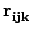
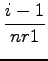
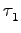
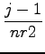
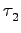
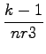
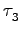
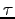
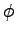

``A common mistake many new users make is to set the time step
dt inproperly to the same order of magnitude as for CP
algorithm, or not setting dt at all. This will produce
a `not evolving dynamics'. Good values for the original RMW
(RM Wentzcovitch) dynamics are dt= 50 ÷ 70
The choice of the cell mass is a delicate matter. An off-optimal mass
will make convergence slower. Too small masses, as well as too long time
steps, can make the algorithm unstable. A good cell mass will make the
oscillation times for internal degrees of freedom comparable to
cell degrees of freedom in non-damped Variable-Cell MD. Test calculations
are advisable before extensive calculation.
I have tested the damping algorithm that I have developed and it has
worked well so far. It allows for a much longer time step
(dt=
100 ÷ 150
(Info from Cesar Da Silva: the new damping algorithm is the default
since v. 3.1).
The index of arrays used to store functions defined on 3D meshes is actually a shorthand for three indeces, following the FORTRAN convention (``leftmost index runs faster''). An example will explain this better. Suppose you have a 3D array of dimension (nr1,nr2,nr3), say psi(nr1,nr2,nr3). FORTRAN compilers store this array sequentially in the computer RAM in the following way:
psi(1,1,1)etc
psi(2,1,1)
...
psi(nr1,1,1)
psi(1,2,1)
psi(2,2,1)
...
psi(nr1,2,1)
...
psi(nr1,nr2,1)
psi(1,1,nr3)
Let ind be the position of the (i,j,k) element in the above list: the relation between ind and (i,j,k) is:
| ind = i + (j - 1)*nr1 + (k - 1)*nr2*nr1 | (1) |
This should clarify the relation between 1D and 3D indexing. In real space, the (i,j,k) point of the mesh is
|  = * + * + * | (2) |
where the 
(info by Stefano Baroni)
= at(: , 1), = at(: , 2), = at(: , 3)
(3)
A symmetry analizer was added in v.3.2 by Andrea Dal Corso. The following info may still be of interest to somebody, though.
You might find the ISOTROPY package useful:
http://stokes.byu.edu/iso/isotropy.html.
You might also find the following info from Pascal Thibeadeau useful:
``please follow
http://dx.doi.org/10.1016/0010-4655(94)00164-W
and
http://dx.doi.org/10.1016/0010-4655(74)90057-5.
These are connected to some programs found in the Computer Physics
Communications Program Library
(http://www.cpc.cs.qub.ac.uk
)
which are described in the articles:
ACKJ_v1.0 Normal coordinate analysis of crystals,
J.Th.M. de Hosson.
ACMI_v1.0 Group-theoretical analysis of lattice vibrations,
T.G. Worlton, J.L. Warren. See erratum Comp. Phys. Commun. 4(1972)382.
ACMM_v1.0 Improved version of group-theoretical analysis of lattice
dynamics, J.L. Warren, T.G. Worlton.''
``ecutrho defines the resolution on the real space FFT mesh (as expressed by nr1, nr2 and nr3, that the code left on its own sets automatically). In the ultrasoft case we refer to this mesh as the `hard' mesh, since it is denser than the smooth mesh that is needed to represent the square of the non-norm-conserving wavefunctions.
On this `hard', fine-spaced mesh, you need to determine the size of the cube that will encompass the largest of the augmentation charges - this is what nr1b, nr2b, nr3b are.
So, nr1b is independent of the system size, but dependent on the size of the augmentation charge (that doesn't vary that much) and on the real-space resolution needed by augmentation charges (rule of thumb: ecutrho is between 6 and 12 times ecutwfc).
In practice, nr1b et al. are often in the region of 20-24-28; testing seems again a necessity (unless the code started automagically to estimate these).
The core charge is in principle finite only at the core region (as
defined by rcut
The small boxes should be set as small as possible, but large enough to
contain the core of the largest element in your system. The formula for
determining the box size is quite simple:
nr1b = (2*rcut)/Lx*nr1
"There is no 'right' way of defining the local magnetic moment around an atom in a multi-atom system. However an approximate way to define it is via the projected density of states on the atomic orbitals (code projwfc.x, see example08 for its use as a postprocessing tool). This code generate many files with the density of states projected on each atomic wavefunction of each atom and a BIG amount of data on the standard output, the last few lines of which contain the decomposition of Lowdin charges on angular momentum and spin component of each atom."
"The order is, I think:
| 1 |
P0, 0(t)
|
| 2 |
P1, 0(t)
|
| 3 |
P1, 1(t)cos
|
| 4 |
P1, 1(t)sin
|
| 5 |
P2, 0(t)
|
| 6 |
P2, 1(t)cos
|
| 7 |
P2, 1(t)sin
|
| 8 |
P2, 2(t)cos 2
|
| 9 |
P2, 2(t)sin 2
|
and so on; Pl, m =
The following site contains a lot of crystal structures:
http://cst-www.nrl.navy.mil/lattice.
"Since this seems to come up often, I'd like to point out that the American Mineralogist Crystal Structure Database (http://rruff.geo.arizona.edu/AMS/amcsd.php) is another excellent place to find structures, though you will have to use it in conjunction with Bilbao (http://www.cryst.ehu.es), and have some understanding of space groups and Wyckoff positions".